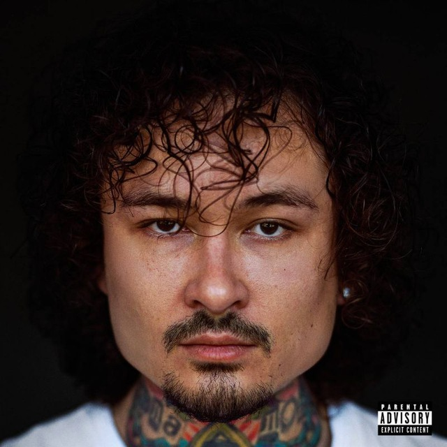

Биография
Алишер Тагирович Моргенштерн — рэп-исполнитель, музыкант и шоумен. В 2017 году первую популярность ему принес проект «Изирэп» на YouTube-канале Morgenshtern.
В рамках проекта он учил подписчиков создавать музыку в стиле известных рэп-исполнителей за минуты. Минюст России признал Моргенштерна иноагентом.почему-то не могу избавиться от чувства, что должен вам объясниться, куда и почему пропал. многие в директе спрашивают, переживают - и для меня это очень странно. для типочка, считающего себя клоуном и весельчаком, поставщиком инфожвачки с яркими, порой пикантными привкусами, которая, однако, быстро теряет свои вкусовые качества. почему вам просто не поxyй?.. 😅😅
ну ладно, тут еще и новый годик на носу — надо вроде как итоги подвести, красиво, по-блогерски. 😅 го.
кому лень читать — сразу спойлер: худший год в моей жизни. 😍😍😍
зато самый прослушиваемый трек хах)))
первый психоз (не путать с приходом), затем первая настоящая депрессия. 😎 неуправляемая бешеная энергия, агрессия и испорченные отношения с людьми, в том числе самыми близкими. а потом — месяцы в зашторенной, полной мусора комнате, ежесекундной ненависти к себе и желании «завершить карьеру». 😜😜😜
походы к психотерапевтам, клиническим психиатрам, диагнозы, куча разных таблеток и, наконец, признание себя сверхзависимым человеком. 🥳 от одной я, кстати, избавился — поздравьте! правда, по настоянию врача, иначе закончил бы пациентом в психушке. зато приобрел новые две. 😎 как-нибудь расскажу обо всем подробнее, только перестану бояться людей и уж тем более показываться в интернете. 🤗 пока что вот вам пост - мини документалочка, спасибо моей привычке постоянно себя снимать)
Дом до сих пор так и не нашел. думаю, им станет рехаб на ближайшее время.
от многих слышал, что год кармический или что-то в этом роде. верю) чувствую, как отдал, отдаю и буду отдавать еще много долгов за свои чудные манёвры и рокнрольный лайфстайл. как раз скоро 27 стукнет. 😋 а еще я выучил слово «последствия» 😅😅😅
25ый станет для меня годом обучения жить заново, поэтому ждать от меня ничего не стоит. 🙏🏻 я сам до конца не понимаю, насколько сложно трезво улыбнуться, когда ты уже 15 лет живешь в постоянном, но лживом «кайфе».
докатываю последние концерты, новых ставить ближайшее время не буду. спасибо всем, кто посетил наши шоу в этом году. может, я и не смог дать столько энергии, как обычно — приходилось ужираться как мразь, чтобы заставить себя выползти из-за кулис с улыбочкой, но ваш бешеный ор помогал мне оживать хотя бы там, на сцене. 🫂
ладно, одна хорошая новость тоже есть. новый год же) каким-то чудом, там, на самом дне этой ямы, получилось написать небольшой альбомчик. там и послушаете мое сочинение, как я провел лето, и не только лето. 🤣
вам желаю здоровья (психического в том числе) 😜. и не брать пример с моргенштерна. у меня хоть деньги на лечение есть. желаю кайфа вам настоящего. и не попадайтесь на удочки сиюминутного фальшивого счастья. цените близких и родных — без них я бы этот пост уже вряд ли писал.
с наступающим, че 🫂
Алишер
p.s. в инстик закинул еще видосики эксклюзивные